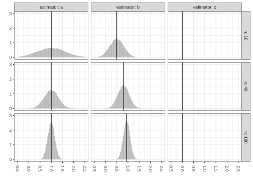
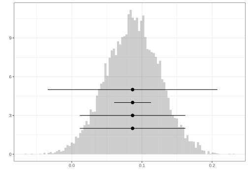
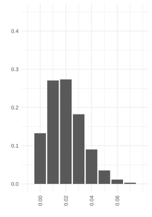
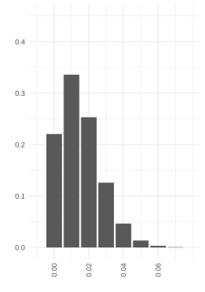
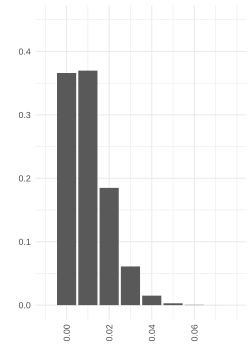
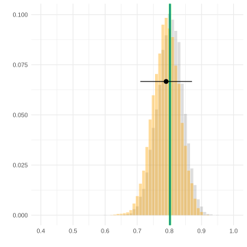
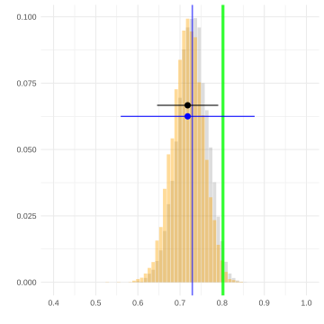

14 Practice Midterm 1
QTM 285-1
\[ \DeclareMathOperator{\E}{E} \DeclareMathOperator{\Var}{V} \DeclareMathOperator{\hVar}{\widehat{V}} \DeclareMathOperator{\bias}{bias} \DeclareMathOperator*{argmin}{argmin} \newcommand{\model}{\mathcal{M}} \]
Problem 1
Suppose we’ve drawn a sample \(Y_1 \ldots Y_n\) with replacement from a population \(y_1 \ldots y_m\) with mean \(\theta=\frac{1}{m}\sum_{j=1}^m y_j\). The plot above shows the sampling distributions of these three estimators of \(\theta\). \[ \begin{aligned} \hat \theta_1 &= 0 \\ \hat \theta_2 &= \frac{1}{n}\sum_{i=1}^n Y_i \\ \hat \theta_3 &= \frac{1}{n+10}\sum_{i=1}^n Y_i \end{aligned} \]

Problem 2
The miracle of random sampling is that we’re able to estimate the mean of a population with a very small sample from that population. But for that to work, our observations have to be independent—or close to it. If we observe the incomes \(Y_1 \ldots Y_n\) of \(n\) people drawn with replacement from a population with mean income \(\mu\) and income standard deviation \(\sigma\), the variance of the sample mean \(Y_1 \ldots Y_n\) will be \(\sigma^2/n\). Below, I’ve shown the calculation.
\[ \begin{aligned} \Var\qty[\frac1n\sum_{i=1}^n Y_i] &= \E\qty[ \qty{ \frac{1}{n}\sum_i Y_i - \E \qty( \frac{1}{n}\sum_i Y_i ) }^2 ] && \\ &= \E\qty[ \qty{ \frac{1}{n}\sum_i (Y_i - \E Y_i) }^2 ] && \\ &= \E\qty[ \qty{ \frac{1}{n}\sum_i Z_i }^2 ] && \text{for} \ \ Z_i = Y_i - \E Y_i \\ &= \E\qty[ \frac{1}{n^2}\sum_i \sum_j Z_i Z_j ] && \\ &= \frac{1}{n^2} \sum_i \sum_j \E Z_i Z_j && \\ &= \frac{1}{n^2} \sum_i \sum_j \begin{cases} \sigma^2 & \text{ when } j=i \\ 0 & \text{ otherwise } \end{cases} \\ &= \frac{1}{n^2} \sum_i \sigma^2 = \frac{1}{n^2} \times n \times \sigma^2 = \frac{\sigma^2}{n} \end{aligned} \]
Problem 3
A brewer delivers a batch of a million bottles to its distributor. The distributor has recently been getting complaints, so they’ve instituted a new quality control process to try to ensure that the proportion of bad bottles is 2% or less. They set aside a hundred bottles, drawn without replacement from that million, for testing. And they find that 3 of them—3%—is bad. Having done this, they claim that the batch doesn’t meet its standards and refuse to pay. The brewer has called you in to consult.



Problem 4
In the block of R code below, I’ve implemented the estimators \(\hat\theta_2\) and \(\hat\theta_3\) from Problem 1.
theta.hat.2 = function(Y) { mean(Y) }
theta.hat.3 = function(Y) { sum(Y)/(length(Y)+10) }And here is code that does a thing.
do.thing = function(estimator) {
1:10000 |> map_vec(function(.) {
I = sample(1:n, size=n, replace=TRUE)
Ystar = Y[I]
estimator(Ystar)
})
}Below, I’ve plotted the sampling distributions of \(\hat\theta_2\) (left) and \(\hat\theta_3\) (right) in gray with their means indicated by blue vertical lines, a histogram of the result of calling do.thing(theta.hat.2) (left) and do.thing(theta.hat.3) (right) in orange, a green vertical line indicating the value of \(\theta\), and interval estimates of the form \(\hat\theta_2 \pm 1.96\hat\sigma_2\) (left) and \(\hat\theta_3 \pm 1.96\hat\sigma_3\) (right) where \(\hat\sigma_2\) and \(\hat\sigma_3\) are the results of calling sd(do.thing(theta.hat.2)) and sd(do.thing(theta.hat.3)) respectively.


Almost. Since we’re sampling without replacement, the actual standard deviation is \(\sqrt{(m-n)/(m-1)}\) times smaller, as we saw in a recent homework. But since \(m\) is a million and \(n\) is 100, this is so close to 1 it makes no practical difference.↩︎